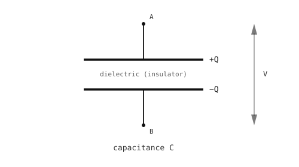

3.11. การดีเบาวน์ซิง¶
สวิตช์ถูกวาดเป็นหน้าสัมผัสที่เปิดหรือปิดอย่างสมบูรณ์แบบ แต่หน้าสัมผัสของสวิตช์จริงไม่ได้สลับระหว่างสองสถานะอย่างคมชัด หน้าสัมผัสจะ สั่น -- เกิดและตัดการสัมผัสทางไฟฟ้าหลายครั้งในเวลาไม่กี่มิลลิวินาทีก่อนที่จะนิ่ง การอ่านค่า GPIO input บนพินนั้นจะเห็นเป็นชุดของขอบสัญญาณ; ลูปการสำรวจที่ไม่ระมัดระวังจะนับหลาย "การกด" สำหรับการกดจริงหนึ่งครั้ง และตัวจัดการอินเทอร์รัปต์จะทำงานหลายครั้งต่อการกดจริงหนึ่งครั้ง

สวิตช์ที่กระเด้งทำให้เกิดชุดการเปลี่ยนแปลงอย่างรวดเร็วก่อนที่จะนิ่ง¶
การดีเบาวน์ซิง คือการกรองการสั่นเพื่อให้การกดทางกายภาพแต่ละครั้งถูกบันทึกเป็นเหตุการณ์เดียว มีสองแนวทางในการแก้ปัญหานี้ -- ซอฟต์แวร์ (กฎการจับเวลาในเฟิร์มแวร์) หรือฮาร์ดแวร์ (ตัวกรองขนาดเล็กบนสาย) ทั้งสองแนวทางไม่ได้แยกกันอย่างสิ้นเชิง
3.11.1. การดีเบาวน์ซิงด้วยซอฟต์แวร์¶
แนวคิดคือจำไว้ว่า input เปลี่ยนแปลงครั้งล่าสุดเมื่อใด และปฏิเสธการเปลี่ยนแปลงเพิ่มเติมภายในช่วงเวลาสั้นๆ นับจากเวลาประทับนั้น การกระเด้งของหน้าสัมผัสมักกินเวลาน้อยกว่า 10 ms; การกดจริงใช้เวลา 50 -- 100 ms; หน้าต่าง 30 -- 50 ms จะจับการกระเด้งทั้งหมดโดยไม่บล็อกการกดจริง
ในลูปการสำรวจ ให้อ่านค่าพิน เปรียบเทียบกับค่าเสถียรล่าสุด และยอมรับการเปลี่ยนแปลงก็ต่อเมื่อหน้าต่างดีเบาวน์ซิงผ่านไปแล้ว:
import time
from machine import Pin
button = Pin("P0", Pin.IN, Pin.PULL_UP)
last_state = 1
last_change = 0
DEBOUNCE_MS = 50
while True:
now = time.ticks_ms()
state = button.value()
if state != last_state and time.ticks_diff(now, last_change) > DEBOUNCE_MS:
last_change = now
last_state = state
if state == 0:
do_action()
time.sleep_ms(10)
สำหรับการอ่านที่ขับเคลื่อนด้วยอินเทอร์รัปต์ ให้ใช้กฎการจับเวลาเดียวกันภายในตัวจัดการ จากนั้นส่งการกดจริงไปยัง main context ผ่าน micropython.schedule() (ดู GPIO input):
import time
import micropython
from machine import Pin
button = Pin("P0", Pin.IN, Pin.PULL_UP)
last_irq = 0
DEBOUNCE_MS = 50
def handle_press(pin):
do_action()
def on_press(pin):
global last_irq
now = time.ticks_ms()
if time.ticks_diff(now, last_irq) < DEBOUNCE_MS:
return
last_irq = now
micropython.schedule(handle_press, pin)
button.irq(handler=on_press, trigger=Pin.IRQ_FALLING)
ISR กรองการกระเด้งด้วยเวลาประทับและจัดคิวคอลแบ็ก; handle_press ทำงานกลับใน main context ซึ่งการจัดสรรหน่วยความจำและ I/O ที่ช้าเป็นเรื่องปลอดภัย
3.11.2. การดีเบาวน์ซิงด้วยฮาร์ดแวร์¶
การดีเบาวน์ซิงด้วยฮาร์ดแวร์กรองการสั่นทางไฟฟ้าก่อนที่จะถึงพิน เครื่องมือมาตรฐานคือตัวเก็บประจุ
ตัวเก็บประจุคือชิ้นส่วนสองขั้วที่เก็บประจุไฟฟ้า ในทางกายภาพ มันประกอบด้วยแผ่นนำไฟฟ้าสองแผ่นที่ห่างกันเล็กน้อย คั่นด้วยฉนวน (ไดอิเล็กทริก)

ตัวเก็บประจุแบบแผ่นขนาน: ตัวนำสองตัวที่คั่นด้วยชั้นฉนวน¶
การใส่แรงดันไฟฟ้าผ่านขั้วทำให้เกิดประจุที่เท่ากันและตรงข้ามบนแผ่นทั้งสอง ความสัมพันธ์คือ
Q = C × V
โดยที่ Q คือประจุที่สะสม (คูลอมบ์), V คือแรงดันไฟฟ้าข้ามตัวเก็บประจุ และ C คือ ความจุไฟฟ้า (ฟารัด) ความจุไฟฟ้าถูกกำหนดโดยโครงสร้างของอุปกรณ์; ความจุไฟฟ้าที่มากขึ้นหมายถึงประจุที่สะสมมากขึ้นที่แรงดันเดียวกัน
ผลที่ตามมา: ตัวเก็บประจุไม่สามารถเปลี่ยนแรงดันไฟฟ้าได้ทันที ประจุที่ไหลเข้าหรือออกต้องผ่านความต้านทานใดก็ตามที่อยู่ในเส้นทาง และความต้านทานนั้นกำหนดว่าแรงดันไฟฟ้าจะเปลี่ยนแปลงได้เร็วแค่ไหน
3.11.2.1. ค่าคงที่เวลา RC¶
การชาร์จตัวเก็บประจุผ่านตัวต้านทานทำให้เกิดการเพิ่มขึ้นแบบเอ็กซ์โพเนนเชียลที่ราบเรียบไปยังแรงดันไฟจ่าย ไม่ใช่แบบขั้นบันได ค่าเวลาลักษณะเฉพาะของการเพิ่มขึ้นนั้นคือค่าคงที่เวลา RC:
τ = R × C
หลังจากหนึ่ง τ ตัวเก็บประจุจะถึงประมาณ 63 % ของแรงดันไฟจ่าย หลังจาก 5 τ จะอยู่ที่มากกว่า 99 % -- "ชาร์จเต็ม" สำหรับวัตถุประสงค์ในทางปฏิบัติ

ตัวเก็บประจุชาร์จตามเส้นโค้งเอ็กซ์โพเนนเชียล τ = RC คือเวลาที่ต้องใช้เพื่อถึง 63 % ของแรงดันสุดท้าย¶
การคายประจุผ่านตัวต้านทานจะเป็นภาพสะท้อน: แรงดันไฟฟ้าลดลงแบบเอ็กซ์โพเนนเชียลจากค่าเริ่มต้นไปยังศูนย์ โดยลดลงเหลือ 37 % ของแรงดันเริ่มต้นหลังจากหนึ่ง τ และเหลือน้อยกว่า 1 % หลังจาก 5 τ

ตัวเก็บประจุคายประจุตามการสลายตัวแบบเอ็กซ์โพเนนเชียล τ = RC คือเวลาที่ต้องใช้เพื่อลดลงเหลือ 37 % ของแรงดันเริ่มต้น¶
3.11.2.2. วงจรดีเบาวน์ซิง¶
ตัวเก็บประจุระหว่างพิน input และกราวด์ ที่ป้อนผ่านตัวต้านทานแบบอนุกรม ก่อตัวเป็น ตัวกรองความถี่ต่ำ สัญญาณรบกวนสั้นๆ ไม่มีเวลาพอที่จะชาร์จหรือคายประจุตัวเก็บประจุผ่านตัวต้านทานนั้น; พินจะอยู่ใกล้กับแรงดันไฟฟ้าเดิมก่อนที่จะมีสัญญาณรบกวน การเปลี่ยนแปลงที่ช้า -- การกดตั้งใจ -- จะชาร์จหรือคายประจุตัวเก็บประจุและการอ่านค่าจะตาม
R1 ดึงด้านสูงของสวิตช์ขึ้นไปยัง Vcc เพื่อสร้างสัญญาณสวิตช์ดิบที่กระเด้ง R2 และ C จะกรองความถี่ต่ำสัญญาณนั้นเข้าพิน:

การดีเบาวน์ซิงด้วยฮาร์ดแวร์: R2 และ C กรองความถี่ต่ำสัญญาณสวิตช์ดิบก่อนที่จะถึงพิน¶
ค่าทั่วไป: R1 = 10 kΩ (ดึงขึ้น), R2 = 10 kΩ (แบบอนุกรม), C = 100 nF
เมื่อสวิตช์เปิด กระแสไฟฟ้าไหล Vcc → R1 → R2 → cap (แบบอนุกรม) ชาร์จ cap ไปยัง Vcc ด้วย τ_charge = (R1 + R2) × C = 2 ms
เมื่อสวิตช์ปิด โหนดสวิตช์จะถูกล็อคไปยังกราวด์และ cap จะระบายออกผ่าน R2 เพียงอย่างเดียวไปยังกราวด์นั้นด้วย τ_discharge = R2 × C = 1 ms
ขอบสัญญาณทั้งสองถูกกรองด้วย RC เนื่องจาก cap อยู่บนโหนดของตัวเอง ปลายน้ำจาก R2 ของสวิตช์ มันจะสวิงอย่างชัดเจนระหว่าง Vcc (เปิด) และ 0 V (ปิด) -- ไม่มีกระแสต้องไหลผ่าน R1 ที่สถานะคงที่ในทั้งสองกรณี
3.11.3. การเลือกระหว่างทั้งสอง¶
ซอฟต์แวร์ คือค่าเริ่มต้น ไม่มีต้นทุนในชิ้นส่วน ค่าขีดแบ่งปรับแต่งได้ง่าย และทำงานได้บนพินใดก็ตามที่ CPU อ่าน
ฮาร์ดแวร์ คุ้มค่าชิ้นส่วนเมื่อการกระเด้งไปถึงสิ่งอื่นนอกจากโค้ดการสำรวจของ CPU -- อินเทอร์รัปต์ที่ต้องไม่ยิงสองครั้ง ตัวนับฮาร์ดแวร์ อุปกรณ์ต่อพ่วงที่ไม่มีตัวกรองของตัวเอง
การดีเบาวน์ซิงด้วยซอฟต์แวร์และฮาร์ดแวร์ยังอยู่ร่วมกันได้อย่างสงบสุข: ตัวกรอง RC ขนาดเล็กระงับสัญญาณรบกวนที่เลวร้ายที่สุด และหน้าต่างดีเบาวน์ซิงซอฟต์แวร์จะครอบคลุมสิ่งที่เหลืออยู่